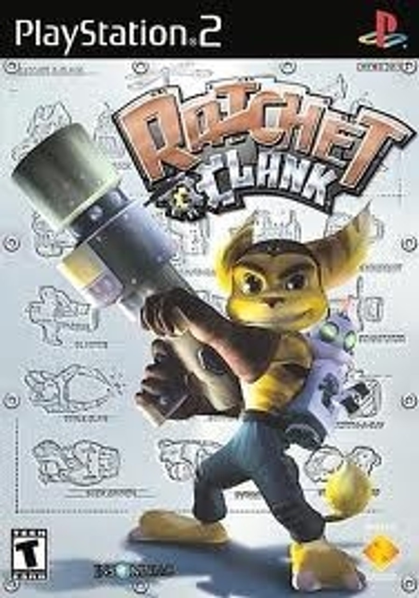

Sinopse
Ratchet & Clank é um jogo de plataforma e ação-aventura desenvolvido pela Insomniac Games. O jogo segue Ratchet, um lombax mecânico que se une a Clank, um robô que ele resgata, para derrotar o vilão Drek e salvar o universo.
O jogo é conhecido pela sua jogabilidade fluída, combate criativo com uma grande variedade de armas, e pelo humor carismático de seus personagens. A fórmula de exploração de planetas, resolução de puzzles e combate rápido tornou-se uma das mais queridas da PlayStation 2.
Características Principais
- Exploração de planetas em ambientes 3D variados
- Vasta gama de armas e gadgets, incluindo a famosa “Groovitron” e a “Bomb Glove”
- Combate dinâmico e rápido, com um sistema de upgrades de armas
- Missões divertidas e desafios de plataforma
- Personagens carismáticos e humorísticos
- Visual vibrante e trilha sonora animada
Imagens Adicionais